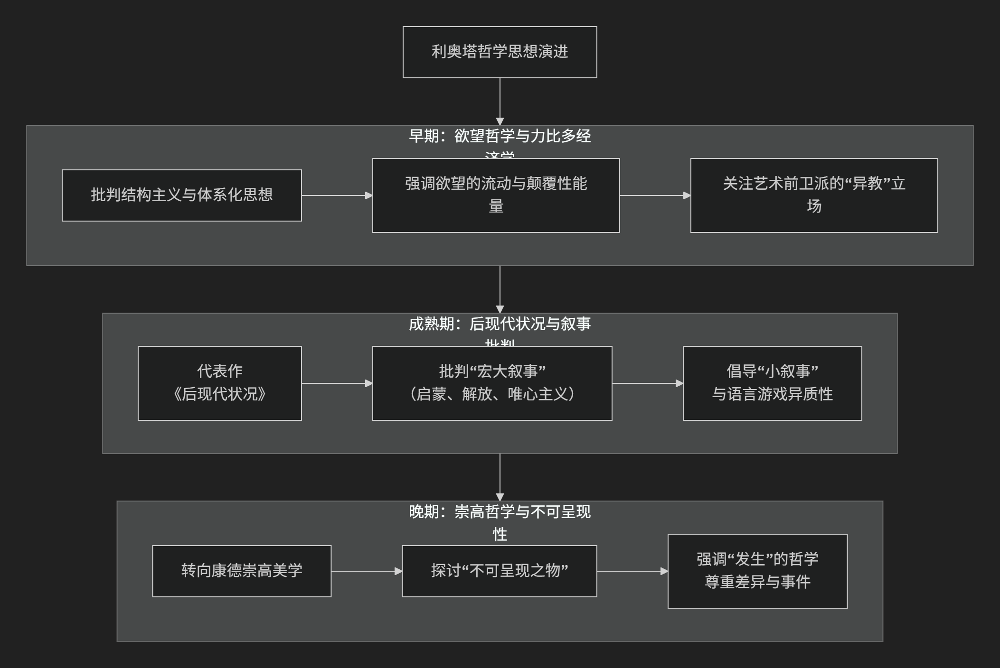

Jean-François Lyotard
基于让-弗朗索瓦·利奥塔（Jean-François Lyotard）哲学核心思想对陈京元博士案件进行评价。
好的，让-弗朗索瓦·利奥塔是20世纪下半叶最具影响力的法国哲学家之一，他被公认为 后现代主义哲学最重要的理论奠基人。他的思想核心可以概括为：对现代性赖以成立的“宏大叙事”进行彻底的批判，并转向对“差异”的捍卫和对“不可呈现之物”的敏感，主张以局部、多元的“小叙事”来取代总体化的知识、政治和历史观。
利奥塔的思想历程复杂，但其理论大厦建立在几个核心支柱之上。下图清晰地展示了他思想的演进脉络与核心构成：

一、后现代状况：对宏大叙事的批判
这是利奥塔最广为人知的贡献，源自他1979年的代表作《后现代状况：关于知识的报告》。
核心诊断：后现代时代最根本的特征是 “宏大叙事的衰落”。
什么是宏大叙事？ 指那些 旨在为整个社会知识、制度和实践提供合法性基础的、无所不包的、目的论的故事或理论体系。最典型的例子有：
启蒙叙事：认为理性之光将解放全人类，带来普遍进步。
解放叙事 （如马克思主义）：认为通过阶级斗争，可以实现全人类的解放。
唯心主义叙事 （如黑格尔哲学）：认为历史是绝对精神自我实现的过程。
为何衰落？ 利奥塔认为，这些宏大叙事在20世纪的历史悲剧（尤其是奥斯维辛集中营）面前已经 失去了可信性。这些事件表明，追求总体性目标往往导致对差异和个体的暴力压制。
后现代的知识形态：在宏大叙事失效后，知识不再是统一的整体，而变成了 无数个局域的、异质性的“小叙事” 的集合。知识的功能也从追求真理转向了 高效的“性能优化”。
二、语言游戏与异教主义
利奥塔借用并改造了维特根斯坦的“语言游戏”概念，为其后现代思想提供理论基础。
语言游戏的异质性：不存在一种统一的语言规则。不同的社会领域（如科学、艺术、伦理、日常交流）都有自己的 语言游戏规则，这些规则之间 不可通约 （即无法用一方的标准去评判另一方）。
异教主义：利奥塔用这个比喻来描述一种 没有终极标准、鼓励创造和争论的立场。如同异教徒没有统一的教条，只在局部实践中形成暂时的共识。哲学家应像异教徒一样，反对思想上的“权威”和“正统”，捍卫话语的多样性。
三、差异与歧论
这是利奥塔哲学的政治和伦理核心。
歧论：这是利奥塔的关键概念，指一种 无法在共同规则下解决的冲突，因为冲突双方仿佛在用不同的语言游戏说话。它不同于可调解的“诉讼”，而是 话语类型的根本性断裂。
哲学的任务：哲学的首要任务不是消除歧论、达成共识，而是 倾听沉默之声，发现并见证歧论，为那些被主流话语压制和边缘化的声音辩护。他认为， 共识往往是压制性的，它掩盖了差异和冲突。
尊重差异：真正的正义不是实现同一，而是 承认并尊重不同语言游戏和叙事的异质性。
四、崇高美学与不可呈现之物
利奥塔后期转向美学，将康德的“崇高”概念作为后现代感受性的核心。
崇高感：崇高是那种 面对巨大或绝对之物（如无限、绝对）时，想象力崩溃，无法呈现其形式的体验。它混合了痛苦（因无法把握）和愉悦（因意识到理性理念的存在）。
后现代艺术的任务：利奥塔认为，后现代艺术的使命不再是提供美的形式，而是 呈现“不可呈现之物”。它应该致力于表现那些被宏大叙事所忽略、所压抑的差异、异质性和事件。
艺术与事件：真正的艺术创作是一个“事件”，它 打破既定的感知和思维框架，让人感受到新的可能性。
—
核心要义总结
理论维度 |
核心命题 |
关键概念与贡献 |
|---|---|---|
知识社会学与历史哲学 |
后现代是宏大叙事衰落的时代，知识分裂为异质性的小叙事。 |
后现代状况、宏大叙事 vs 小叙事、性能优化 |
语言哲学与政治学 |
社会由异质的语言游戏构成，哲学应捍卫”歧论”，反对压制性共识。 |
语言游戏、异教主义、歧论、差异 |
美学与伦理学 |
后现代艺术应呈现”不可呈现之物”，关注事件，唤醒对差异的敏感。 |
崇高、不可呈现之物、事件 |
思想特质与影响
批判性：利奥塔的思想是对现代性总体化倾向的深刻反思和警告。
前瞻性：他精准地预见了信息社会中知识的商品化、碎片化和局部化趋势。
伦理关怀：他的“歧论”哲学为边缘群体和少数话语的权利提供了强大的理论支持。
影响深远：其思想深刻影响了文化研究、政治理论、法学、艺术批评和教育学等领域。
总而言之，让-弗朗索瓦·利奥塔的核心思想在于，他是一位**差异的哲学家和事件的见证者**。他教导我们，在面对一个日益强调效率、共识和一体化的世界时，我们必须保持对**异质性、不确定性和不可通约性**的敏感。他的哲学是对一切试图抹平差异的总体化力量的持续抵抗，是对“另类可能性”的坚定捍卫。